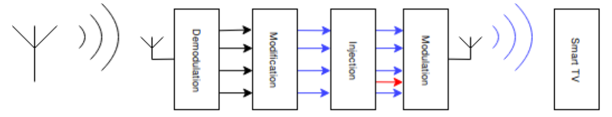

Sécurité des Smart TVs : DVB-T et HbbTV
Sec Sdf
Smart TVs: Security of DVB-T, ANSSI
Alan Camilo Herrera
Kevin Phouratsamay


Deux objectifs possibles d'une attaque sur les Smart TVs :
- Accéder à des données confidentielles stockées sur la Smart TV
- Utiliser la Smart TV compromise pour une attaque plus large
Scénario d'attaque sur DVB-T
Principe : exécution d'une application HbbTV signalée dans le flux DVB. L'Application Information Table (AIT) pointe définit l'application chargée pour une chaîne.
2 modes de téléchargement d'une application :
- Téléchargement par HTTP(S)
- Téléchargement par DVB (carousel)
Exécution automatique de l'application possible dès que l'utilisateur regarde une chaîne
Emission d'un signal sur les bandes de fréquence réservées aux diffuseurs TV
Setup : ~150€ de matériel de réception/émission DVB-T et les logiciels libres pour démoduler, modifier, injecter, moduler et émettre
Infection en ~10 secondes
HbbTV malveillante
- Application JavaScript
- Architecture client-serveur
- Exploitation de failles de navigateur non patché
- Intraçable
- Aucunte interaction de l'utilisateur nécessaire